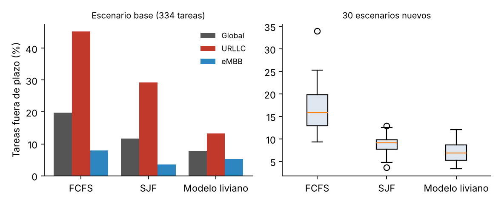

Qué se está investigando sobre Edge AI en la red de acceso radio, contado a partir de 813 publicaciones científicas, y un experimento propio para ver si un modelo pequeño puede organizar mejor el trabajo de un servidor de borde.
“La presente Divulgación Pública de la Ciencia, a través del siguiente Desarrollo Web, tiene una ruta de circulación nacional sin enfoque diferencial y está dirigido a la comunidad o público objetivo conformado por jóvenes, adultos, empresarios y/o empresa en género literario informativo de tipo Blog, con componente digital a través de soporte web”.
Por Juan Pablo Moreno Peña y Juan David Ruiz Higuera · Grupo 6 · Comunicaciones II (27145), Universidad Industrial de Santander · Profesor Ronald Zamora Musa · Noviembre de 2026
813documentos de Scopus, 2016–2025
149términos en el mapa final
5líneas de investigación
−60 %tareas fuera de plazo con el modelo liviano frente a FCFS
¿Por qué llevar la IA al borde de la red?
Cuando el celular necesita una respuesta en milisegundos, ir hasta la nube y volver ya es demasiado lejos.
Hoy casi toda la inteligencia artificial que usamos (reconocer voz, detectar objetos en una imagen, recomendar contenido) corre en centros de datos que pueden estar a cientos o miles de kilómetros. Para la mayoría de las aplicaciones eso no importa. Pero hay casos, como un carro autónomo que frena, un robot industrial o una cirugía remota, donde la respuesta tiene que llegar en pocos milisegundos y sin falla. Ese tipo de tráfico se llama URLLC.
Edge AI propone ejecutar los modelos en servidores ubicados junto a la estación base, en la RAN, o incluso en el mismo dispositivo. Así se reduce la distancia, se envía menos información a internet y los datos sensibles no salen de la zona. A cambio, esos servidores tienen menos capacidad que la nube, así que hay que decidir con cuidado qué tarea se ejecuta primero: eso es el scheduling, y es el centro del experimento de la entrada 6.
Pruébalo: ¿nube o borde?
Mueve los controles y compara cuánto tarda una respuesta si el modelo está en la nube o en un servidor de borde. El cálculo es aproximado: la señal viaja por fibra a unos 200.000 km/s y cada salto de red agrega algo de retardo.
Distancia a la nube
Cómputo del modelo
Velocidad del borde
El borde está a ~10 km pero es más lento que la nube: el control indica cuántas veces más tarda en calcular. La línea de 10 ms es una meta típica para aplicaciones críticas.
Mapa conceptual
Así se conectan las cinco líneas de investigación que encontramos. Toca un recuadro para ver de qué trata.
Toca un recuadro del mapa.
Cómo buscamos y limpiamos la información
De 813 documentos a un mapa de 149 términos, paso a paso.
Usamos Scopus, una base de datos que solo indexa revistas y congresos con revisión por pares, y VOSviewer [3], un programa gratuito que lee títulos y resúmenes, extrae los términos y dibuja qué tan seguido aparecen juntos.
La búsqueda
TITLE-ABS-KEY ( "edge AI" OR "on-device AI" ) AND PUBYEAR > 2015 AND PUBYEAR < 2026 AND ( LIMIT-TO ( DOCTYPE , "ar" ) OR LIMIT-TO ( DOCTYPE , "cp" ) )
Periodo
2016–2025, la ventana que recomienda la guía del curso.
Tipo
Artículos y ponencias. Se dejan por fuera reviews, capítulos y editoriales.
Campos
Título, resumen y palabras clave, que son los que lee VOSviewer.
Documentos por año. 2025 concentra el 45 % del total; entre 2017 y 2018 no aparece ninguno.
Del texto al mapa
Unimos sinónimos
El primer mapa tenía el mismo concepto repetido con nombres distintos. Con un tesauro unimos 28 variantes en 15 términos:
Quitamos el relleno
De los 281 términos que eligió VOSviewer quitamos 132 que no dicen nada técnico. Elige un criterio para verlos:
El mapa de la investigación
Cada punto es un término; su tamaño indica cuántas veces aparece y el color, a qué línea de investigación pertenece.
Toca un punto
Verás sus diez conexiones más fuertes. La fuerza de asociación es el número de documentos en que dos términos aparecen juntos.
Cinco líneas de investigación, veinte palabras
Con la regla ZamoraCluster (5 clústeres → 4 palabras por clúster × 10 enlaces) analizamos 200 relaciones. En cada clúster tomamos las cuatro palabras con mayor fuerza total.
Lo que viene: tendencias 2019–2025
Porcentaje de documentos de cada año que mencionan un término en el título o el resumen. Activa o desactiva términos para compararlos.
Lo más reciente
Términos con el año promedio de publicación más alto.
Lo más establecido
Términos con el año promedio más antiguo.
El vacío que encontramos. Los agentes pasan de 3 % de los documentos en 2021 a 10 % en 2025, y los LLM aparecen con fuerza. Pero la mención directa de la red de acceso radio se queda entre 3 % y 6 %: la mayoría de los trabajos optimiza el cómputo en el borde en general y pocos llegan hasta la RAN. De ahí sale nuestro experimento.
Experimento: ¿un modelo pequeño organiza mejor la fila?
Un servidor de borde recibe tareas de inferencia de dos tipos y tiene que decidir cuál atiende primero.
Simulamos en Python un servidor de borde de 10 GFLOP/s que recibe 3 tareas por segundo. El 30 % son URLLC, con plazos de 0,1 a 1 s, y el resto eMBB, con plazos de 1 a 5 s. Comparamos tres formas de ordenar la fila:
FCFS
El primero que llega es el primero que se atiende.
SJF
Primero la tarea más corta.
Modelo liviano
Una regresión logística estima qué tarea tiene más riesgo de no cumplir su plazo y la atiende primero.
Lo que esperábamos
H1. El modelo reduce las tareas que terminan fuera de plazo. Se cumple.
H2. Protege el tráfico crítico URLLC. Se cumple: sus fallas bajan de 48 a 14.
H3. Tiene un costo: algunas tareas eMBB esperan mucho más. Se cumple: la latencia p99 sube.
Resultados
Política
Fuera de plazo
Fallas URLLC
Fallas eMBB
Lat. promedio
Lat. p99
FCFS
19,8 %
48 de 106
18 de 228
1,03 s
3,7 s
SJF
11,7 %
31
8
0,81 s
6,9 s
Modelo liviano
7,8 %
14
12
1,05 s
20,0 s

Izquierda: escenario base (334 tareas). Derecha: 30 escenarios nuevos con los que el modelo no se entrenó.
¿Se sostiene con otros datos? En 30 escenarios nuevos el modelo dejó en promedio 7,1 % de tareas fuera de plazo, contra 9,0 % de SJF y 16,8 % de FCFS, y le ganó a SJF en 27 de los 30. Cada predicción tarda unos 1,5 µs, nada frente a tiempos de servicio de decenas de milisegundos.
Simúlalo tú
Este simulador usa el mismo modelo entrenado en Python. Cambia la carga y la proporción de tráfico crítico y mira qué pasa.
Tareas por segundo
% URLLC
Decisión de ingeniería
Si solo miráramos la latencia promedio, ganaría SJF. Pero cuando hay tráfico crítico lo que importa es cumplir los plazos, y ahí el modelo liviano es mejor con un costo de cómputo casi nulo. Lo usaríamos, agregando un tiempo máximo de espera para las tareas eMBB, para que no se queden al final de la fila indefinidamente.
La investigación en Edge AI despegó desde 2019; solo 2025 reúne casi la mitad de los documentos.
task y scheduling son los términos con más peso del mapa y su enlace (54) es el más fuerte de los 200 analizados.
Lo más nuevo: LLM y agentes en el borde, decisiones en tiempo real y sostenibilidad.
La IA dentro de la RAN todavía aparece poco en la literatura.
Un modelo de cuatro variables bastó para bajar las fallas de plazo de 19,8 % a 7,8 %.
Cómo aprendimos
Con más de 800 documentos no se podía leer todo. Primero hicimos el mapa y después leímos solo los más citados de cada clúster. El primer mapa salió con sinónimos repetidos y términos vacíos como «problem» en el centro; tuvimos que rehacerlo. En el experimento aprendimos que un resultado hay que probarlo con datos distintos a los de entrenamiento antes de creerle.
Para la próxima: armar el tesauro desde el principio y usar una búsqueda que combine "edge AI" con términos de la RAN.
¿Cuánto recuerdas?
Videos recomendados y equipo
Dos videos para complementar lo que contamos en el blog: uno en español para entender la idea general y otro sobre la IA dentro de la red de acceso radio.
¿Qué es Edge AI?
Fuente: Dot CSV (YouTube, 2021). Explica qué significa ejecutar modelos de IA en el propio dispositivo, sin depender de la nube. Ver en YouTube
La IA llega a la RAN
Fuente: AI-RAN Alliance (YouTube, 2026, en inglés; se pueden activar subtítulos en español). Muestra cómo la industria está integrando IA en la red de acceso radio, que es justo el vacío que encontramos en las tendencias. Ver en YouTube
Equipo
JP
Juan Pablo Moreno Peña 2215592 Búsqueda en Scopus y desarrollo del blog.
JD
Juan David Ruiz Higuera 2211241 Depuración en VOSviewer y experimento en Python.
El análisis de los clústeres y las palabras lo hicimos entre los dos.
Fuentes
Referencias en formato IEEE. Todas forman parte de los 813 documentos analizados, salvo el artículo de VOSviewer.
Tu turno
Este enlace se publica en el foro del aula virtual. Cuéntanos qué te pareció.